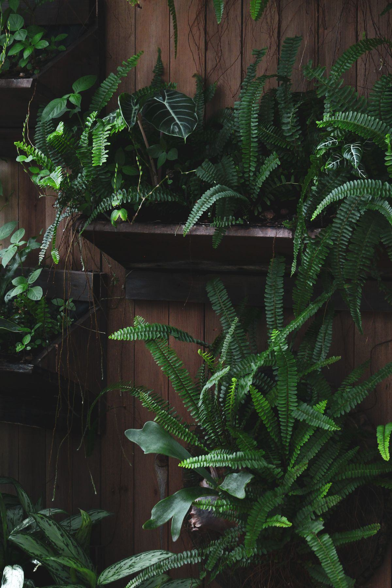

Bureaux près de la gare Saint-Laud, brasserie du centre ou showroom à Beaucouzé : Verdalys précise votre projet de mur végétal puis le confie à un installateur partenaire couvrant le Maine-et-Loire. Rappel sous 24 h ouvrées.
Par Sébastien Monnier, fondateur de Verdalys · Mis à jour le

L'horticulture fait partie de l'histoire économique d'Angers, et le pôle de compétitivité du végétal Végépolys Valley y a son siège. Entreprises, restaurants et commerces angevins prolongent naturellement cette image dans leurs locaux.
Le secteur de la gare Saint-Laud concentre immeubles de bureaux, agences et sièges régionaux. Un mur végétal en bureaux y habille un hall ou une salle de réunion, le plus souvent en stabilisé pour éviter toute plomberie sur un plateau loué.
Restaurants et brasseries du centre, boutiques de la rue Lenepveu et des abords du Ralliement, adresses de la Doutre : un mur végétal derrière un comptoir ou en fond de salle donne une identité immédiate. Voir notre page hôtels & restaurants.
Les parcs d'activités de l'agglomération accueillent showrooms, concessions et entreprises de services. Un mur végétal y valorise un accueil client ou un espace d'exposition, sans travaux de plomberie. Voir notre page commerces & showrooms.
Le climat doux de l'Anjou est plutôt favorable au végétal ; c'est le bâti — tuffeau, schiste, locaux anciens peu éclairés — qui oriente le plus souvent le choix du système.
Salles voûtées, rez-de-chaussée profonds, boutiques sans fenêtre : le stabilisé ne demande ni arrosage ni lumière. Seule précaution : l'écarter des pièces durablement humides, au-delà d'environ 70 % d'hygrométrie.
Un hall vitré ou un atrium bien éclairé peut accueillir un mur naturel vivant avec irrigation automatique, en contrepartie d'un contrat d'entretien de 80 à 200 € HT par m² et par an.
Le tuffeau, calcaire tendre et poreux, et les maçonneries anciennes doivent respirer : un mur végétal extérieur ne s'y pose pas sans étude de l'étanchéité et de la ventilation. Les principes sont détaillés sur la page mur végétal extérieur.
Hivers modérés, étés tempérés : cours, patios et terrasses se végétalisent bien avec des plantes rustiques et une irrigation automatique. En zone très exposée, un feuillage artificiel traité anti-UV supprime l'arrosage.
Les devis angevins reprennent les repères nationaux ; la nature du support et l'accès au chantier peuvent les faire évoluer.
| Type de mur végétal | Usage typique à Angers | Prix indicatif HT posé |
|---|---|---|
| Stabilisé lichen et mousse | Salle de restaurant, boutique du centre | 400 – 650 €/m² |
| Stabilisé avec logo intégré | Accueil de siège, showroom | 650 – 900 €/m² |
| Mur vivant, irrigation à part | Hall vitré, atrium | 600 – 1 200 €/m² |
| Végétal artificiel anti-UV | Terrasse, cour exposée | 150 – 400 €/m² |
Sans frais ni démarchage : un seul professionnel reçoit vos informations.
Type d'établissement, surface, commune et nature des murs — tuffeau, schiste, cloison.
Sous 24 h ouvrées, pour arrêter la technologie au regard du bâti et de la lumière.
Clair et détaillé, sans frais ni obligation d'y donner suite.
Angers Loire Métropole et l'ensemble du Maine-et-Loire (49).
Centre, Doutre, Saint-Serge, gare Saint-Laud, Belle-Beille, Monplaisir et les Hauts-de-Saint-Aubin.
Avrillé, Trélazé, Les Ponts-de-Cé, Beaucouzé, Saint-Barthélemy-d'Anjou et Écouflant.
Cholet, Saumur, Segré et le Baugeois : précisez votre commune lors de la demande.
Verdalys n'a pas de bureau à Angers et ne réalise aucune pose : nous cadrons la demande. Un installateur partenaire indépendant couvrant l'Anjou réalise l'étude, la pose et l'entretien éventuel, et reste votre unique interlocuteur.
Décrivez le lieu : un installateur partenaire vous rappelle sous 24 h ouvrées, devis gratuit et sans engagement.
Demander mon devis gratuitAngers fait partie des villes couvertes partout en France : retrouvez les autres pages dédiées.